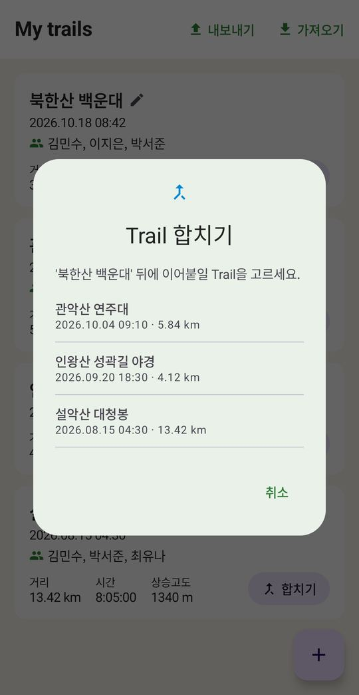
합치기
중간에 끊긴 기록을 하나로 이어 붙여요. 경로·사진·거리·고도·함께한 사람까지 한 번에 합쳐져요.
오늘 걸은 산, 숫자만 남기기 아깝잖아요
GPS로 기록한 산행을 위성지도 위에 그려 넣고, 사진은 찍은 자리에서 펼쳐 보여 줍니다. 버튼 몇 번이면 휴대폰 안에서 하이라이트 영상이 완성돼요.
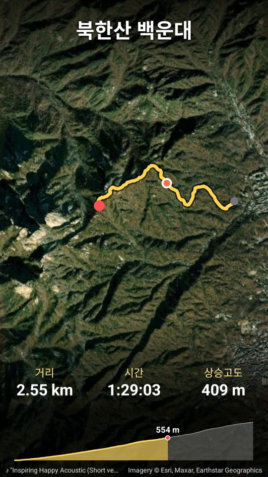
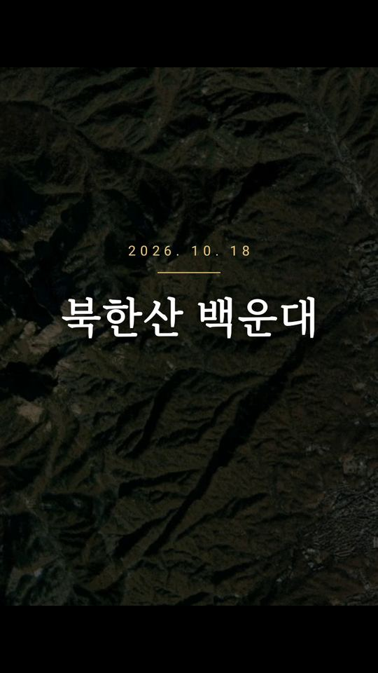
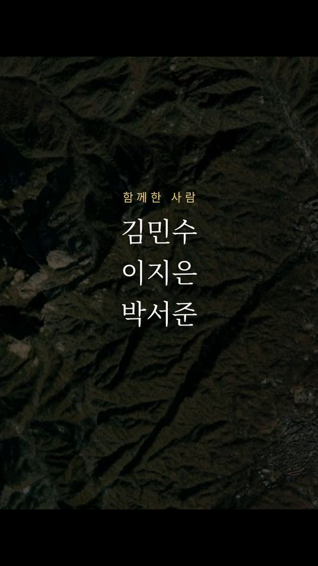
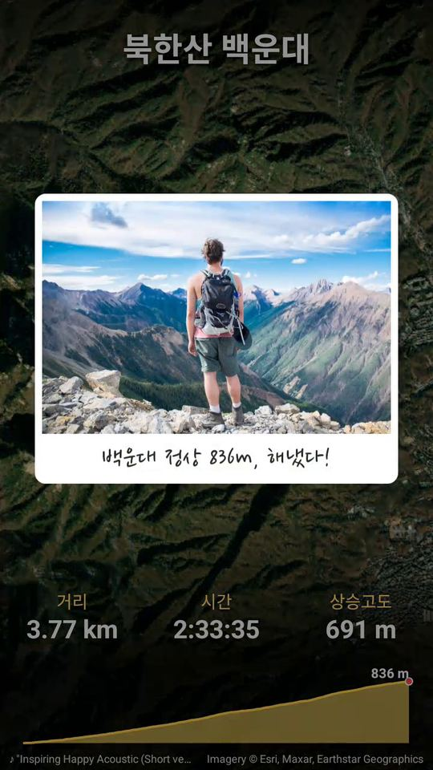
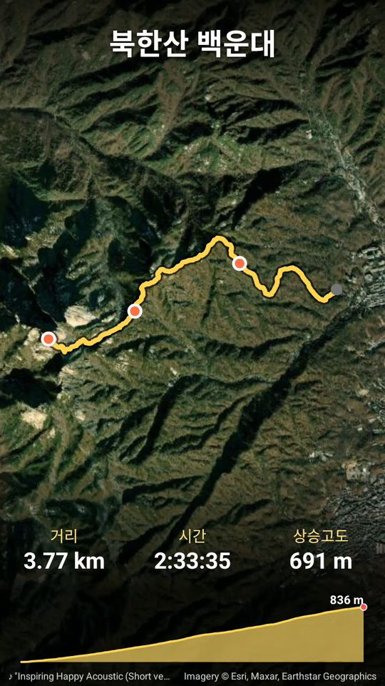
편집 앱을 따로 배울 필요가 없어요. 산에서 하던 그대로 걷고 사진을 찍으면, 나머지는 MyTrail이 맞춰 줍니다.
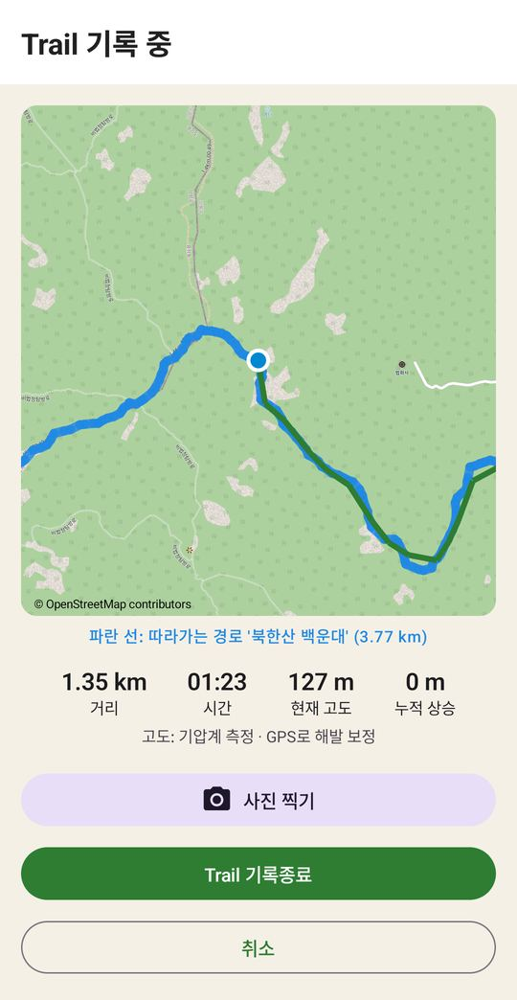
New Trail에서 기록을 누르면 화면을 꺼도 경로·거리·고도가 계속 쌓여요. 앱이 꺼져도 이어서 기록할 수 있어요.
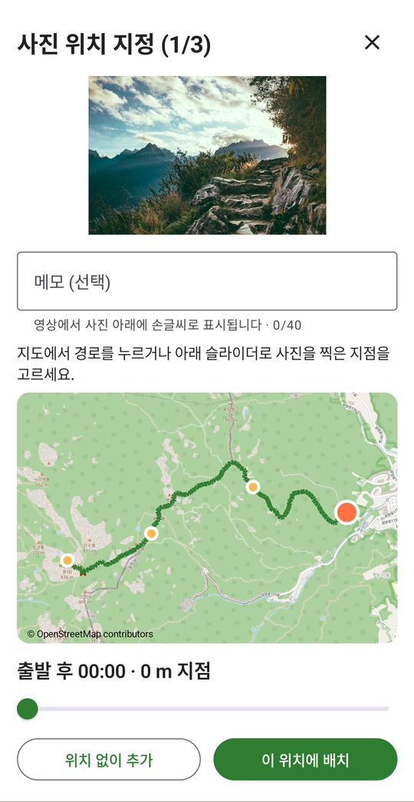
갤러리에서 고르면 찍은 시각에 맞춰 경로 위 자리를 찾아 줘요. 한 줄 메모도 남겨 보세요.
음악을 고르고 만들기를 누르면 끝. 영상은 갤러리에 저장되고 바로 공유할 수 있어요.
"돌계단 시작! 아직은 웃는 중"
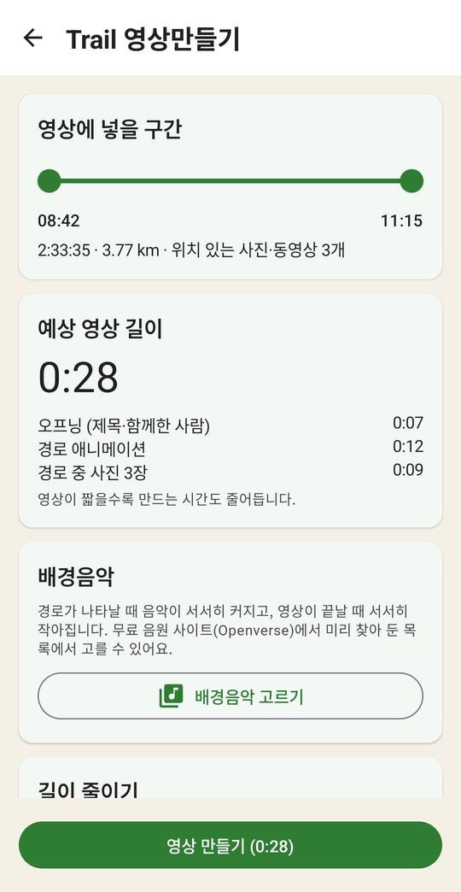
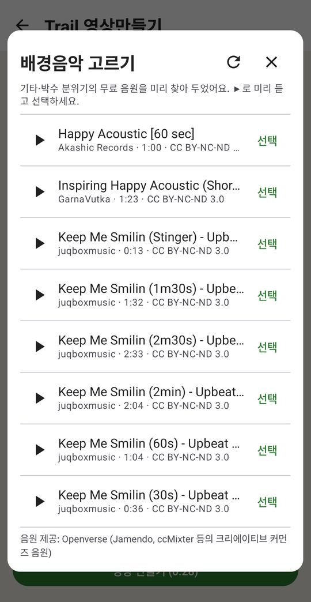
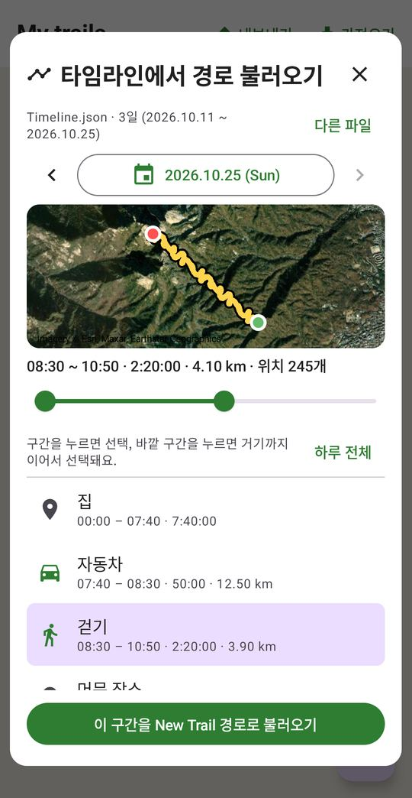

중간에 끊긴 기록을 하나로 이어 붙여요. 경로·사진·거리·고도·함께한 사람까지 한 번에 합쳐져요.
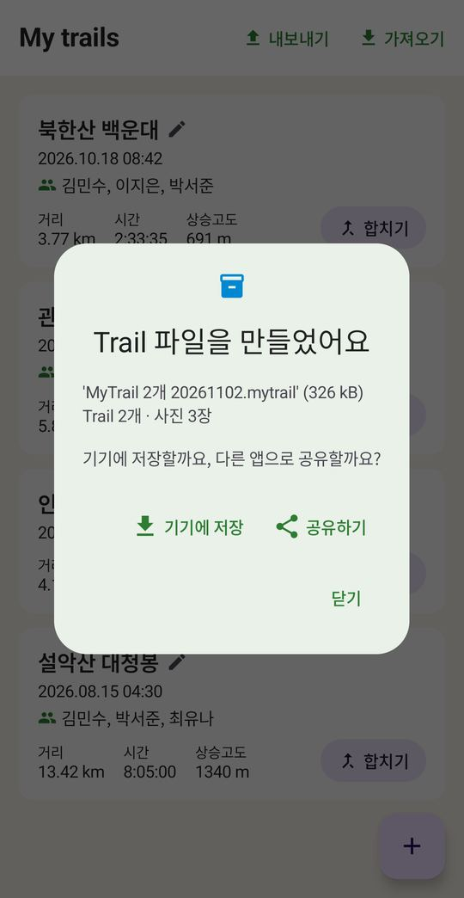
여러 산행을 골라 경로·사진·동영상·메모를 .mytrail 파일 하나에 담아요. 휴대폰을 바꿀 때도, 친구에게 보낼 때도 그대로 가져오면 돼요.
지운 사진·동영상은 바로 사라지지 않고 Trail의 휴지통으로 가요. 비우기 전까지는 언제든 되살릴 수 있어요.
경로·사진·메모는 기기 안에만 저장돼요. 저희 서버로 보내지 않아요.
위성지도와 배경음악 목록을 받을 때만 인터넷을 써요. GPS 기록은 인터넷 없이 돼요.
Trail을 지우거나 휴지통을 비우면 기기에서 바로 삭제돼요. 갤러리 원본은 그대로예요.
네. 다운로드와 모든 기능이 무료이고 광고도 없어요.
지금은 안드로이드 8.0 이상 휴대폰에서만 쓸 수 있어요.
GPS 기록은 인터넷 없이도 계속돼요. 위성지도와 배경음악 목록은 인터넷이 될 때 받아요.
My trails의 '내보내기'로 산행을 골라 .mytrail 파일을 만든 뒤, 새 휴대폰에서 '가져오기'로 열면 사진·동영상까지 그대로 옮겨져요.
갤러리의 Movies/MyTrail 폴더에 저장돼요. 만든 직후 바로 공유할 수도 있어요.
배경음악은 크리에이티브 커먼즈 음원이라 곡마다 조건이 달라요. 곡 이름 옆 라이선스에 NC(비영리)가 있으면 수익을 내는 채널에는 쓰지 마세요.